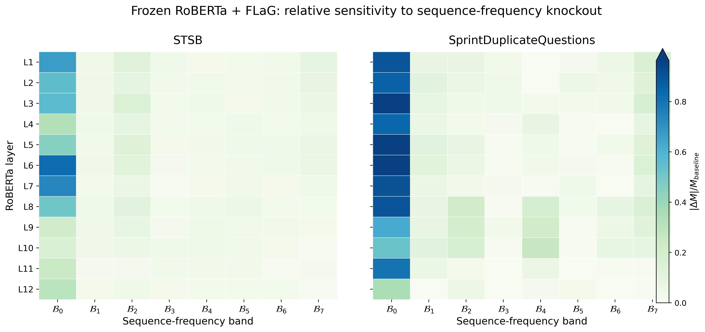
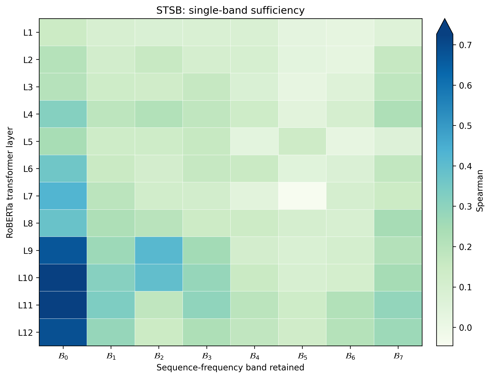
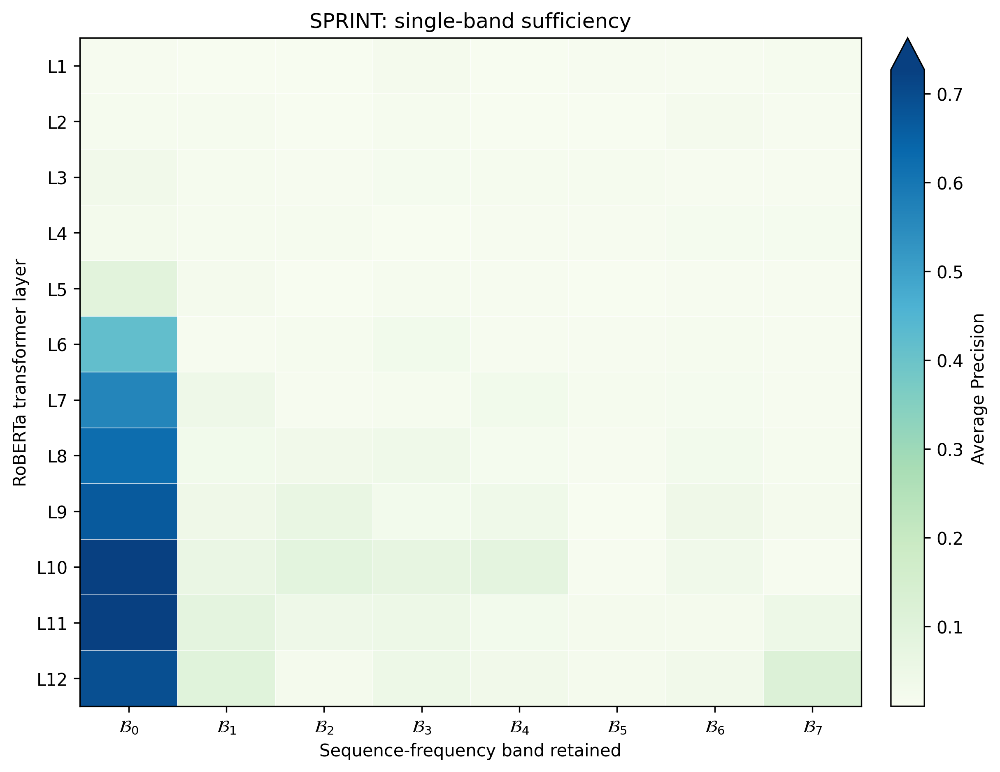

DC / 频带机制：STSB 与 Sprint 的 frozen-backbone 对照¶
本页记录一组专门回答 “DC 分量到底承载了什么，以及模型是否真的依赖 DC” 的机制实验。使用 frozen RoBERTa-base + trainable FLaG 设置。
当前页面使用 seed 0 的 frozen-backbone 控制实验。STSB 指标为 Spearman，Sprint 指标为 Average Precision (AP)。两者指标不同，因此跨任务比较时优先看相对变化，而不是直接比较绝对数值。
1. 问题¶
我们希望区分三个不同的问题：
- DC readability：直接读取 DC / global-mean 成分，能得到多少任务信息？
- Band-only sufficiency：只保留某一频带，完整模型还能恢复多少性能？
- Band-knockout dependency：删除某一频带，完整模型性能会下降多少？
这三者不能混为一谈：
- band-only 更接近“这一频带单独够不够用”；
- knockout 更接近“模型实际依不依赖这一频带”；
- 二者同时成立时，证据最强。
2. 统一实验设置¶
| 项目 | STSB | SprintDuplicateQuestions |
|---|---|---|
| Backbone | RoBERTa-base，frozen | RoBERTa-base，frozen |
| Pooling | FLaG | FLaG |
| Backbone 是否参与任务训练 | 否 | 否 |
| Pooling 是否训练 | 是 | 是 |
| 主指标 | Spearman | Average Precision |
| 频带数 | 8（B0–B7） | 8（B0–B7） |
| Knockout norm restoration | 是，AMP-compatible | 是，AMP-compatible |
| Band-only norm restoration | 否 | 否 |
Frozen STSB FLaG 的 seed-0 test 结果：
- Spearman = 0.710535
- Pearson = 0.720285
3. Band knockout：删除哪个频带最伤模型？¶
定义：
其中 \(l\) 为 RoBERTa 层，\(k\) 为频带。
- \(\Delta M>0\)：删除该频带使性能下降；
- \(\Delta M<0\)：删除后反而略有提升，说明该频带在当前 checkpoint 下可能不是正贡献，或存在冗余/干扰。
3.1 最后一层 L12¶
| 任务 | Baseline | 删除 B0 后 | B0 drop | 相对下降 |
|---|---|---|---|---|
| STSB | 0.710311 | 0.492913 | 0.217398 | 30.6% |
| Sprint | 0.757690 | 0.493323 | 0.264368 | 34.9% |
STSB L12 各频带：
| Band | Drop |
|---|---|
| B0 | 0.217398 |
| B1 | 0.015078 |
| B2 | 0.036547 |
| B3 | 0.015344 |
| B4 | 0.021344 |
| B5 | 0.016429 |
| B6 | 0.016766 |
| B7 | 0.008004 |
Sprint L12 各频带：
| Band | Drop |
|---|---|
| B0 | 0.264368 |
| B1 | -0.001295 |
| B2 | 0.041159 |
| B3 | 0.000924 |
| B4 | 0.014051 |
| B5 | 0.015914 |
| B6 | -0.002491 |
| B7 | -0.007384 |
结果：两边最后一层都是 B0/DC 明显最重要。 B0 的 knockout 损失远高于任何单个非 DC 频带。
3.2 B0 dependency 随层变化¶
STSB 的 B0 knockout drop：
| Layer | Δ |
|---|---|
| L1 | 0.475 |
| L3 | 0.400 |
| L6 | 0.583 |
| L7 | 0.524 |
| L9 | 0.151 |
| L10 | 0.117 |
| L11 | 0.178 |
| L12 | 0.217 |
STSB 的 DC dependency 在中层最强，进入高层后整体减弱，但 L12 仍然明显依赖 DC。
Sprint 的 B0 knockout drop：
| Layer | Δ |
|---|---|
| L1 | 0.681 |
| L3 | 0.729 |
| L5 | 0.734 |
| L6 | 0.744 |
| L8 | 0.684 |
| L10 | 0.399 |
| L11 | 0.610 |
| L12 | 0.264 |
Sprint 的一个突出特征是：
也就是最后一层 DC dependency 明显下降。这一模式与 AMP 机制实验中“最终层 DC contribution 骤降”的观察方向相似。
注意到非DC频带
在STSB上 的 B1-B7 几乎全部是正 drop，所有drop里只有一个负数，说明这些非 DC 成分虽然不如 B0，但基本都在提供正向信息。
在Sprint 上drop正负交替，每一个频带提供信息抖动，但求和发现带来的整体drop大部分layer上高于STSB任务
经过平均计算后，发现Sprint上每一层非DC频带的整体平均值大部分高于STSB，且变化程度高，不如STSB上平缓

4. Band-only：只给一个频带，模型还能做多少？¶
Band-only 与 knockout 正好相反：
这里不做 norm restoration。
对于 L1–L11，保留下来的单频带仍会经过后续 Transformer 层，因此后续层可以重新产生新的频率结构。
因此最干净的直接单频带测试是 L12：L12 后面已经没有 Transformer 层，只剩 FLaG。
4.1 L12：B0 单独几乎可以恢复完整模型¶
| 任务 | Baseline | B0-only | 保留 baseline 比例 | 最强非 B0 单频带 |
|---|---|---|---|---|
| STSB | 0.710311 | 0.684905 | 96.4% | B1 = 39.6% |
| Sprint | 0.757690 | 0.692524 | 91.4% | B7 = 15.0% |
STSB L12：
| Band | Band-only metric | Baseline fraction |
|---|---|---|
| B0 | 0.684905 | 96.4% |
| B1 | 0.281616 | 39.6% |
| B2 | 0.146808 | 20.7% |
| B3 | 0.226917 | 31.9% |
| B4 | 0.174942 | 24.6% |
| B5 | 0.126907 | 17.9% |
| B6 | 0.210444 | 29.6% |
| B7 | 0.266920 | 37.6% |
Sprint L12：
| Band | Band-only metric | Baseline fraction |
|---|---|---|
| B0 | 0.692524 | 91.4% |
| B1 | 0.097830 | 12.9% |
| B2 | 0.023563 | 3.1% |
| B3 | 0.047994 | 6.3% |
| B4 | 0.032518 | 4.3% |
| B5 | 0.022983 | 3.0% |
| B6 | 0.033055 | 4.4% |
| B7 | 0.113973 | 15.0% |
这说明 B0/DC 不只是“删掉以后很重要”，而且单独留下 B0 就已经接近完整模型性能。
注意到非DC频带
STSB集上虽然 B0 仍然是绝对主导，但非 DC 频带中仍然分散着更多可用的任务信息。
Sprint据集上它高度依赖 B0，而且除了 B0 之外，单个非 DC 频带几乎都没有很强的独立预测能力。


5. B0-only 随深度变化¶
STSB¶
| Layer | B0-only / baseline |
|---|---|
| L1 | 20.7% |
| L2 | 29.2% |
| L3 | 28.8% |
| L4 | 44.8% |
| L5 | 34.0% |
| L6 | 51.0% |
| L7 | 60.2% |
| L8 | 53.2% |
| L9 | 94.2% |
| L10 | 102.2% |
| L11 | 103.7% |
| L12 | 96.4% |
Sprint¶
| Layer | B0-only / baseline |
|---|---|
| L1 | 1.8% |
| L2 | 2.2% |
| L3 | 4.3% |
| L4 | 3.2% |
| L5 | 12.3% |
| L6 | 55.2% |
| L7 | 74.5% |
| L8 | 82.1% |
| L9 | 88.1% |
| L10 | 95.7% |
| L11 | 100.4% |
| L12 | 91.4% |
一个非常明显的共同趋势是：
随着 RoBERTa 加深，单独依靠 B0 恢复任务性能的能力迅速增强。
特别是 Sprint，从 L1 的 1.8% 增长到 L11 的 100.4%，表现得像一个逐层把 task-relevant global information 汇入 B0 的“信息漏斗”。
6. 当前可以得出的结论¶
C1. DC/B0 是两个任务共同的核心全局信息通道¶
在 frozen RoBERTa + FLaG 的匹配条件下：
- STSB L12 B0-only 保留 96.4% baseline；
- Sprint L12 B0-only 保留 91.4% baseline；
- 删除 B0 又分别造成约 30.6% 和 34.9% 的相对性能下降；
- 其他单个频带都远弱于 B0。
因此 B0 同时表现出：
- 高 sufficiency：只保留它仍能完成大部分任务；
- 高 dependency：删掉它又会造成最大的性能损失。
C2. STSB 提供了“语义信息高度集中于 DC”的直接任务证据¶
STSB 的目标本身就是 sentence-level semantic similarity。
最终层仅保留 B0 时仍保留约 96.4% 的完整模型 Spearman，而删除 B0 又造成最大的性能损失。
因此当前结果支持：
STSB 所需的句级整体语义相似性信息，在最终 RoBERTa 表示中高度集中于、或至少高度可由 DC / global-mean component 读取。
C3. DC 不能简单等同于“语义”¶
Sprint 的 B0-only 同样保留 91.4% baseline，而且 B0 knockout 同样造成最大损失。
因此 DC 更可能是：
一种普遍的 global task-relevant information channel，其中当然可以包含 sentence-level semantics，但并不只编码 STSB 式语义相似度。
C4. STSB 与 Sprint 的主要差异不在“谁更依赖 DC”，而在深度方向上的组织方式¶
实验并不支持“STSB 比 Sprint 更依赖 DC”。
相反：
- Sprint 的 B0 knockout sensitivity 整体很强；
- Sprint 在 L11 → L12 出现明显的 DC contribution drop；
- STSB 更像中层达到 DC dependency 高峰，再在高层减弱。
STSB中非DC频带整体预测能力低，重要性变化大，但重要性求和数值大于Sprint
Sprint中非DC频带预测能力较高，重要性平缓，不是很大
就感觉这个结论在打架
7. 训练过程中直接删除 / 仅保留 exact DC¶
前面的 layer-band knockout / band-only 使用的是 Prism B0–B7 频带划分。这里进一步做一个更严格的控制：
直接对 FLaG 实际 rFFT 后的精确 \(k=0\) 系数进行操作。
因此本节里的 exact DC 与前文的 B0 低频带 要区分开：
- B0：Prism 划分下最低频带，可能包含 DC 及其它低频系数；
- exact DC：严格只指 rFFT 的 \(k=0\) 系数。
7.1 实验设计¶
为了避免“训练时删除 DC”和“只保留 DC”两边模型容量不同，主比较使用三个严格匹配的 frozen-backbone FLaG：
| 条件 | RoBERTa | FLaG | 可见频率 | 是否训练 |
|---|---|---|---|---|
| Full FLaG | frozen | trainable | \(k=0\) + \(k>0\) | 是 |
| No-DC FLaG | frozen | trainable | 仅 \(k>0\) | 是 |
| DC-only FLaG | frozen | trainable | 仅 \(k=0\) | 是 |
另外保留：
| 参考项 | 说明 |
|---|---|
| Exact DC / Mean | frozen RoBERTa + masked Mean pooling；parameter-free exact-DC readout |
三个 FLaG 条件的 backbone、模型容量、优化器和训练协议保持一致，唯一变量是 训练过程中允许模型看到哪些频率。
实现上：
- No-DC：在真实 rFFT 后将 spec[:, 0] 置零；
- DC-only：保留 spec[:, 0]，其余 spec[:, 1:] 全部置零；
- sanity check 同时验证：
- No-DC 只改变 \(k=0\)；
- DC-only 只保留 \(k=0\)；
- 其它频率不会被连带修改。
7.2 Seed-0 结果¶
STSB：test Spearman¶
| 条件 | Spearman | 相对 Full |
|---|---|---|
| Full FLaG | 0.710535 | 100.0% |
| No-DC FLaG | 0.646152 | 90.9% |
| DC-only FLaG | 0.746003 | 105.0% |
| Exact DC / Mean | 0.543549 | 76.5% |
Sprint：validation AP¶
| 条件 | Validation AP | 相对 Full |
|---|---|---|
| Full FLaG | 0.757690 | 100.0% |
| No-DC FLaG | 0.628402 | 82.9% |
| DC-only FLaG | 0.916407 | 120.9% |
| Exact DC / Mean | 0.302018 | 39.9% |
Sprint official test 上：
| 条件 | Test AP |
|---|---|
| Full FLaG | 0.724596 |
| No-DC FLaG | 0.534044 |
| DC-only FLaG | 0.894565 |
这说明 Sprint 上的 DC-only 增益并不只出现在 validation，official test 同样保持。
7.3 直接观察¶
STSB¶
- 训练阶段持续删除 exact DC 后，仍保留约 90.9% 的 Full 性能；
- 只保留 exact DC 并训练同一个 FLaG，反而达到 0.7460，高于 Full 的 0.7105；
- parameter-free Mean 只有 0.5435。
因此：
DC 中包含很强的 STSB task-relevant information，但“DC 中有信息”不等于“直接 Mean + cosine 就能充分读取这些信息”。
Sprint¶
- No-DC FLaG test AP 从 0.7246 降到 0.5340；
- DC-only FLaG test AP 达到 0.8946；
- frozen Mean / exact-DC raw readout 只有 validation AP 0.3020。
因此 Sprint 上更明显地表现出：
预训练 RoBERTa 的 final-layer exact DC 中已经存在很强的任务相关信息；专门针对 DC 训练的 FLaG readout 可以把这些信息显著解码出来。
与此同时：
No-DC 仍然能取得不低的性能，说明 non-DC 中也存在可利用信息，但在当前设置下其独立能力明显弱于 DC-only。
8. Sprint DC-only 的 padding / length shortcut 排查¶
由于 Sprint DC-only FLaG 的 test AP 达到 0.894565，需要排查其是否只是利用了 dynamic padding、batch composition 或句长捷径。
8.1 Dynamic-padding batch size¶
同一个 DC-only checkpoint，在不同 batch size 下重新评估 validation AP：
| Batch size | Validation AP |
|---|---|
| 1 | 0.917211 |
| 8 | 0.916872 |
| 32 | 0.915688 |
| 64 | 0.916407 |
| 128 | 0.916413 |
最大波动约 0.0015 AP，非常小。
8.2 改变 batch grouping / order¶
固定 batch size = 64：
| 顺序 | Validation AP |
|---|---|
| Natural order | 0.916407 |
| Permuted order | 0.916893 |
| Absolute difference | 0.000486 |
随机改变样本分组后结果几乎不变。
8.3 Dynamic padding vs fixed padding=128¶
| Split | Dynamic padding | Static padding=128 |
|---|---|---|
| Validation AP | 0.916407 | 0.906464 |
| Test AP | 0.894565 | 0.884416 |
固定 padding 后确实下降约 0.01 AP，说明 padding 方式有轻微影响，但无法解释整体高性能。
即使使用 static padding=128：
仍明显高于 Full FLaG 的 test AP。
8.4 Length-only baseline¶
仅使用两句话的 token length、长度差、长度比例等简单长度特征：
| Baseline | Validation AP | Test AP |
|---|---|---|
| Logistic regression on length features | 0.011315 | 0.010996 |
| (- | L_1-L_2 | ) |
这一水平接近 Sprint 的正样本比例，说明简单句长信息本身几乎不能完成任务。
8.5 当前结论¶
综合 batch size、batch grouping、fixed padding 和 length-only baseline：
Sprint DC-only FLaG 的高性能不能由 dynamic padding、batch composition 或简单 sentence-length shortcut 解释。
目前更合理的解释是：
Frozen RoBERTa 的 final-layer exact DC 中存在高度可利用的 Sprint task-relevant information；训练后的 FLaG 可以从该单一频率成分中解码出远强于 raw Mean + cosine 的任务信号。
但目前仍是 seed 0 机制控制。如果这一现象作为正式核心结论使用，下一步应补 multi-seed 稳定性，并进一步检查 DC magnitude normalization 等控制。
9. Exact DC 实验后的更新结论¶
结合前面的 B0 频带实验和本节 exact-DC 训练实验，目前更合适的表述是：
- B0 / 低频频带在两个任务中都是显著的重要信息通道。
- Exact DC 本身包含大量任务相关信息，但其可读性高度依赖 readout。
- Mean pooling 不是“DC 信息量”的上限。 frozen Mean 较低只说明 raw mean + cosine 解码能力有限。
- 训练时删除 DC 后模型仍可利用 non-DC 补偿，但 Sprint 的损失更大。
- 只保留 exact DC 并训练相同 FLaG 时，STSB 和 Sprint 都能达到甚至超过 Full FLaG 的 seed-0 结果。
- Sprint DC-only 的异常高性能已通过 padding / length audit，当前没有证据表明它主要来自简单长度或 batch-padding 捷径。
一句话总结：
DC 并不是唯一的信息来源，但在 frozen RoBERTa 的最终表示中，它是一个极其强的 task-relevant information carrier；模型是否能利用这些信息，很大程度上取决于后续 readout，而不是由 Mean pooling 的表现单独决定。